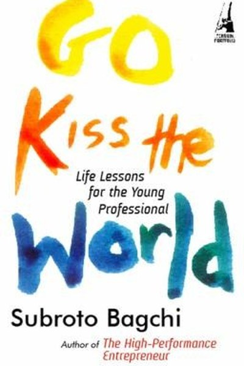

Library › Business & Startups
Go Kiss the World — Summary & Key Lessons

Life lessons for the young professional from the co-founder of Mindtree.
📖 OPEN THE FULL INTERACTIVE BREAKDOWN →🌐 Read it in Hindi, Hinglish, Gujarati, Tamil & 22 more languages — free, with audio.
💡 The Big Idea
Life itself is the greatest business school — and the lessons it teaches are not the ones in MBA textbooks. Bagchi grew up in a family of modest means in Odisha, faced polio, poverty and tragedy, and carried the values of his parents into building one of India's most respected companies. His message to young professionals: embrace adversity, stay curious, keep your values, and go kiss the world — engage with life fully instead of hiding from it.
🧠 The 7 Key Lessons
Lesson 1: Adversity Is the Curriculum
The Early Years
Bagchi's childhood — poverty, a disabled father, his own polio, a family tragedy — reads like a syllabus of hardship. His point: these were not obstacles to his success; they were the training. People who face adversity early develop resilience, empathy and hunger that comfort can't teach. The lesson: don't wait for a painless path. Treat every difficulty as course material and extract its lesson deliberately.
📖 Example: His mother's grit and his father's dignity in the face of disability became the templates for how he later handled company crises. The practical edge: 'adversity is the curriculum' is not a one-time decision — it's a habit that compounds with every… Read the full example →
⚡ Do this: List the three hardest things that happened to you. For each, write one skill or value you gained that you would not have without it.
Lesson 2: Values Are Taught in Small Acts
The Family University
Bagchi credits his parents for lessons no school gave: honesty in small transactions, respect for every person, the dignity of work. These were not lectures — they were daily demonstrations. The lesson: values are caught, not taught. If you lead a team or a family, your behaviour in small moments is the real curriculum. People remember how you treated a waiter more than what you said in a meeting.
📖 Example: His father, despite disability, insisted on working and never taking charity — a daily lesson in dignity that shaped Bagchi's own refusal to cut corners. Here's the part that usually gets missed: 'values are taught in small acts' works quietly. You won't see… Read the full example →
⚡ Do this: Identify one value you want your team or family to have. Demonstrate it in a small, visible act this week — no lecture attached.
Lesson 3: Life Is the Real Business School
Learning Everywhere
Bagchi never treats formal education as the source of his success. His teachers were people around him — relatives, bosses, even strangers — and his classrooms were everyday situations. The lesson: treat every experience as tuition. The person who extracts a lesson from a bad boss, a failed project and a boring job compounds learning faster than any degree-holder who stops learning at graduation.
📖 Example: He describes learning management, empathy and resilience from watching relatives run small shops and his mother manage a crisis-ridden household. The real test of this lesson is a bad day: the principle that survives a crisis, a tight deadline and a doubting… Read the full example →
⚡ Do this: At the end of each day this week, write one sentence: 'Today I learned...' Extract it deliberately from whatever happened, good or bad.
Lesson 4: Small-Town Roots, Big-World Grit
Coming from Nowhere
Bagchi's journey from a small Odisha town to founding a global IT company is his proof that geography is not destiny. His advantages: hunger, humility and the freedom to dream without inherited expectations. The lesson: not having a head start can be an asset — you have nothing to defend and everything to prove. Outliers are usually people who converted their outsider status into focus.
📖 Example: He often notes that the best engineers he met were not from elite cities but from small towns — hungrier, humbler, more willing to work hard. In practice, 'small' shows up in tiny daily choices long before it shows up in outcomes — the choice is invisible,… Read the full example →
⚡ Do this: Write down one way your 'disadvantage' — background, lack of connections, late start — could be reframed as an advantage you can exploit.
Lesson 5: Leadership Is Service, Not Title
The Leader's Burden
For Bagchi, leadership is the willingness to carry others' problems — the leader eats last and takes blame first. His co-founding of Mindtree was an exercise in shared sacrifice: founders took less pay than they could have, to build something lasting. The lesson: leadership is a function, not a rank. You lead whenever you choose service over comfort, and people follow those who carry weight, not those who collect titles.
📖 Example: In Mindtree's early days, founders worked without salaries and treated every employee's problem as their own — building loyalty no compensation plan could buy. Most people nod at this principle and change nothing. The gap between agreeing and acting is where… Read the full example →
⚡ Do this: This week, take responsibility for one problem that isn't 'yours' — absorb it, fix it, and give the credit away.
Lesson 6: Curiosity Is a Career Strategy
Stay Hungry
Bagchi's advice to young professionals: never stop asking questions, reading and exploring beyond your job description. The people who stall are those who master one task and stop; the people who rise are those whose curiosity compounds into versatility. The lesson: your career is not your designation — it is your learning curve. If you're not learning, you're not progressing, whatever your title says.
📖 Example: His own career zigzagged across government, advertising, hardware and IT — each move driven by curiosity, each adding a layer that made him a better founder. The uncomfortable truth about this lesson: it requires doing the boring version first — the… Read the full example →
⚡ Do this: Read one book or take one course this month in an area completely outside your field. Note what it changes in how you see your own work.
Lesson 7: Go Kiss the World — Engage, Don't Hide
The Title Itself
The book's title comes from Bagchi's advice to his daughter — and it is his whole philosophy in three words. Too many people play small: they hide from risk, from people, from life's messiness, waiting for safety that never comes. The lesson: engagement is the antidote to fear. Kiss the world — travel, meet, build, fail, love, try. The regrets will not be the things you attempted; they will be the things you avoided.
📖 Example: Every major step in his life — leaving a safe government job, co-founding a company, writing books — required stepping into uncertainty, and each one paid. go Kiss the World Read the full example →
⚡ Do this: Identify one thing you are avoiding because it's uncertain. Do the scariest small version of it this week — send the email, make the call, start the project.
✅ 5-Step Action Plan
- Extract one lesson from each of your three hardest experiences.
- Demonstrate one value visibly this week — no lecture.
- Write 'Today I learned...' every day for a week.
- Reframe one of your disadvantages as an advantage in writing.
- Take one uncertain step you've been avoiding — this week, not someday.
⚠️ When This Doesn't Work
Bagchi's 'engage with life, embrace adversity, stay curious' is the most life-affirming Indian business book ever — and TinyOwl is the warning that engagement without economics is just enthusiasm: the food-delivery startup had the most engaged, curious, passionate founders of its generation — they lived the book — and still burned through millions and shut down when the per-order economics never worked. Bagchi's own career worked because Mindtree had a model; the book underweights that part. The caveat: kiss the world, yes — but bring a business model to the date. Curiosity opens doors; only revenue keeps them open.
💀 The Graveyard Proves It
🦉 TinyOwl — Burned ₹100 Crore, Locked Its Own Founder In. Burn: $27M raised; ended in hostage-style layoffs. Read the full case study →
💬 Best Quotes from Go Kiss the World
- “Go kiss the world — do not hide from it, engage with it.”
- “Adversity is the best teacher; it is the curriculum of life.”
- “Your values are your destiny.”
Interactive version: mark lessons as read, listen in your language, share quote cards.